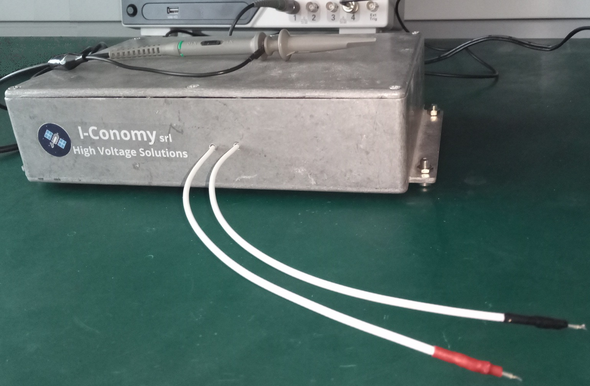
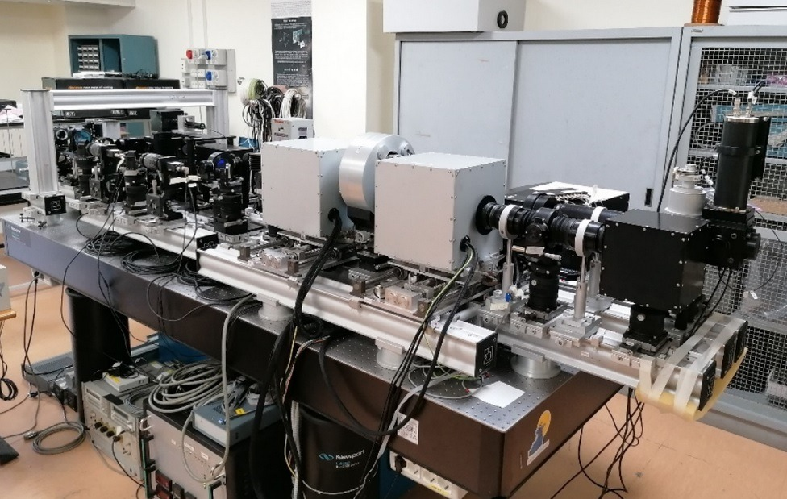

4-quadrant fast and very low noise HV power supply systems for capacitive loads.


High Voltage 4-quadrant power supply for fast, high-precision piezoelectric actuators. Capable of both supplying and absorbing current, featuring negative-to-positive output voltages characterised by very low noise.
Designed for the Interferometric BIdimensional Spectrometer 2.0 (IBIS 2.0) at INAF, Rome — a spectropolarimetric solar imaging instrument requiring fast, precise piezoelectric actuator control with capacitive loads up to 25 nF.
When the desired voltage is not present in our catalogue, we propose customised solutions in a limited time at competitive prices — for both ground and space applications. Single or multiple channel configurations available.